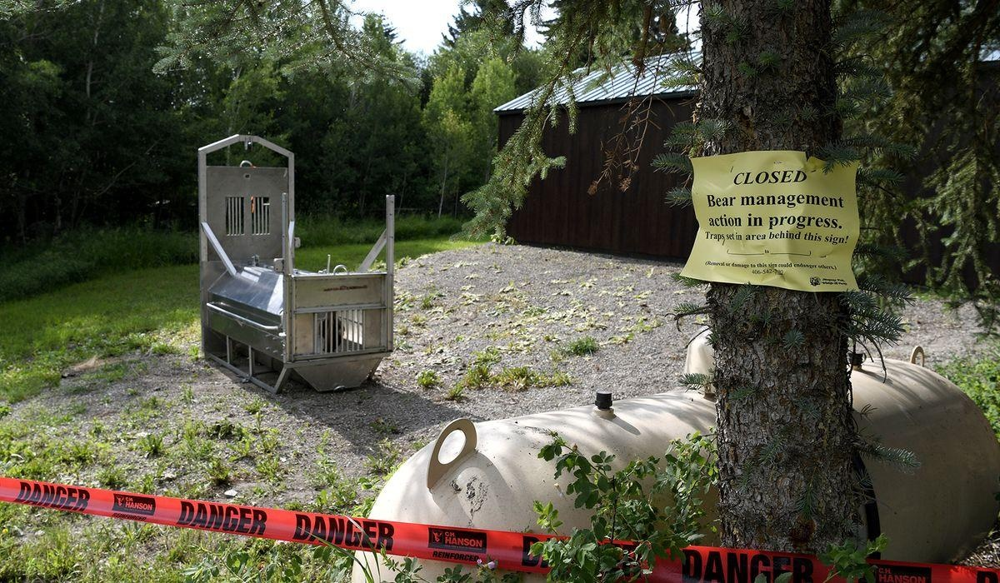

Search underway for grizzly bear suspected in fatal Yellowstone attackWEST YELLOWSTONE, Montana — Authorities searched Monday for a grizzly bear that attacked and killed a woman on a trail west of Yellowstone National Park along the Montana-Idaho border. The attack happened Saturday morning only a few hundred yards from a trailhead and private campground. There was no sign that the bear, which was traveling with at least one cub, tried to eat the victim, who appears to have been jogging when she was fatally mauled, said Morgan Jacobsen with Montana Fish, Wildlife and Parks. Authorities could not say for certain whether the victim was preyed upon or whether it was a chance encounter as she traveled alone in a wooded area frequented by grizzly and black bears. A hiker found her body along the trail at around 8 a.m. Saturday. The victim’s name has not been released. She was wearing running shoes and did not have bear spray, a deterrent that wildlife experts recommend people carry in areas frequented by bears. “This person was likely out for a morning jog along the trail and that’s when this happened,” said Jacobsen. Tracks of a grizzly bear and at least one cub were found at the scene of the attack, which occurred near the Buttermilk Trailhead 8 miles west of West Yellowstone, a busy summer tourist town and gateway to the national park. The popular hiking trail also is used by people ATVs and other off-road vehicles Rangers issued an emergency closure for areas of the Custer Gallatin National Forest. It did not include Yellowstone National Park. A trail camera captured an image of a grizzly bear with two cubs in the area on Saturday, but there have been no sightings since, Jacobsen said. Traps set for the bears on Saturday and Sunday nights came up empty, and attempts to locate the bears from an aircraft were unsuccessful. Authorities had not decided if they would set traps again Monday night or decided whether they would kill or relocate the adult bear if it is captured, Jacobsen said. As time goes by, he added, trapping becomes less effective as chances increase of catching a bear that wasn’t involved in the attack. Grizzly bear populations in the northern U.S. Rocky Mountains have grown significantly in recent decades. Since 2010, grizzlies in and around Yellowstone have killed at least nine people, but attacks remain relatively rare in the region, which draws several million tourists each summer. A backcountry guide was killed near West Yellowstone two years ago when he was mauled by a large grizzly bear that wildlife officials said was probably defending a nearby moose carcass. And a hiker was killed north of Yellowstone park last year in a suspected grizzly encounter in a remote area of the Absaroka Mountains south of Livingston, Montana. Encounters with humans can prove deadly for bears, too: A five-year-old female grizzly in Glacier National Park was euthanized last week after officials said it got used to eating food from campgrounds and was becoming increasingly aggressive. Grizzlies are protected under federal law outside of Alaska. Elected officials in the Yellowstone region are pushing to lift protections and allow grizzly hunting. State officials last week warned visitors and residents of grizzly bear sightings throughout the state, “particularly in areas between the Northern Continental Divide and the Greater Yellowstone ecosystems.” They implored those camping and visiting parks to carry bear spray, store their food while outside and tend to their garbage. Please read our comment policy before commenting. |
 |